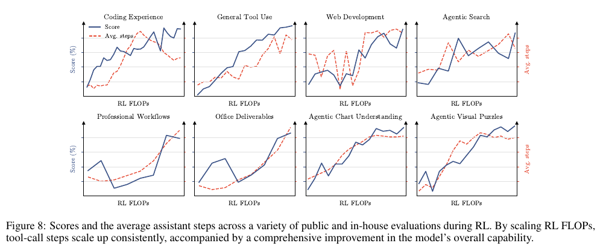

00全景与读法
五条结论：① 蒸馏已取代两种 RL——旗舰最终整合阶段的混合 RL（DeepSeek-V4、K3、GLM-5 均以 OPD 收尾）与小模型上的 RL（Qwen3 小模型只蒸馏，GPU 时约 1/10）；② 蒸馏没有取代作为能力来源的 RL，2026 年无反例；③ RL 在无教师前沿、可验证超人域、长程 agent 行为、保持可塑性四个维度不可替代；④ 理论上是同一枚硬币——RL 少遗忘的机制正是其边界受限的机制；⑤ 真实分界不是算法而是"是否拥有环境与验证器"。
每节三段：叙事怎么说（左栏，灰）/ 证据是什么（右栏，橙）/ 本站判断（色块）。第三方 独立论文或多方一致；自报 厂商或作者口径；推断 本站分析。多数头对头实验在 32B 以下、数学域，前沿 MoE 无公开消融——这是全文最重要的限定。
贯穿全文的线索：on-policy。RL 与 OPD 都让模型自己采样，SFT 蒸馏不是；这一变量同时决定了遗忘表现与能力边界，也是 OPD 能够"取代混合 RL"的原因。
01三种蒸馏与三种 RL
离线 SFT 蒸馏用教师轨迹做学生 SFT；在线策略蒸馏 OPD 由学生自采样、教师逐 token 打分（2025-10 由 Thinking Machines 系统化，2026 年成为旗舰后训练收官阶段）；自蒸馏以带上下文或示例的自己作教师。RL 侧：RLVR（可验证奖励）、RLHF（学习的奖励模型）、DPO（离线偏好，行为更像 SFT）。
叙事怎么说
"蒸馏 vs RL"是两种训练范式的二选一。
证据是什么
第三方 OPD 既 on-policy（同 RL）又稠密监督（同 SFT），中文社区称其为"SFT、RL 之后的第三代后训练"；DPO 为离线算法、无 rollout，在线 PPO 类持续优于离线 DPO（2506.21495）。
本站判断本篇大部分"蒸馏取代 RL"的证据主角是 OPD，而它本身既不是纯蒸馏也不是纯 RL。不切分就无法回答问题。
02遗忘与泛化
RL's Razor（NeurIPS 2025，2509.04259）：同等新任务性能下 on-policy RL 遗忘显著少于 SFT，遗忘量由相对基座的 KL 预测，RL 隐式偏向 KL 最小解；RL 仅更新 5-30% 参数且跨种子高度重叠，稀疏性来自近策略数据（2505.11711）；"SFT 记忆、RL 泛化"（2501.17161）但 SFT 是 RL 的必要前置。蒸馏侧反面证据：稠密自蒸馏 SDPO 在持续后训练中比 GRPO 遗忘更多甚至崩溃（2607.01763）；带示例的在线自蒸馏提升 pass@1 但 pass@k 变平（2606.26091）。
叙事怎么说
蒸馏更稳定，RL 容易破坏模型。
证据是什么
第三方 四篇以上独立工作一致：on-policy RL 遗忘更少（KL 最小 + 稀疏更新 + 基座电路保留）；SFT 蒸馏可漂到任意远；OPD 介于两者之间且依赖教师稠密度。规模多在 32B 以下。
本站判断关键变量是 on-policy 而非"RL 或蒸馏"的标签。这一结论在 §09 会翻转成 RL 的局限。
03能力边界
Yue et al.（2504.13837）：RLVR 提升 pass@1 但 pass@256 低于基座，正确路径已在基座分布中，蒸馏能注入新推理模式、扩展边界（Qwen2.5 7B-32B）；Invisible Leash 将 RLVR 形式化为"支撑集受限优化"；Kim et al.（2505.14216）给出最清晰的界：蒸馏扩展能力当且仅当引入新知识，只蒸推理模式则与 RLVR 一样。反证：ProRL（1.5B，2k+ 步 + 参考策略重置）在基座全采样也失败的任务上得到解，但数学域 pass@128 常下降；竞赛编程上 RL 在 pass@256 仍领先，归因于组合式解空间与执行奖励的探索信号（2604.01302）。
叙事怎么说
RL 让模型学会新能力；蒸馏只是复制。
证据是什么
第三方 数学域：RLVR 不超基座支撑集，蒸馏（有新知识时）扩展边界——与叙事相反；富解空间（代码、agent）：长 RL 可扩张支撑集。RL 受限证据强，RL 扩张证据中。
本站判断"RL 创造、蒸馏复制"的直觉在数学域是反的，在代码与 agent 域是对的。域的解空间结构决定了谁扩展边界。
04样本与算力效率
DeepSeek-R1 论文：R1-Distill-Qwen-32B（AIME24 72.6）优于对同基座直接大规模 RL 的 R1-Zero-Qwen-32B，"小模型靠 RL 算力巨大且可能不及蒸馏"；920 条蒸馏样本即胜过 SOTA zero-RL（2505.21067）；Qwen3 报告：0.6B 至 30B-A3B 全部强到弱蒸馏，8B 学生"性能优于 RL 且 GPU 时约 1/10"；Thinking Machines：Qwen3-32B→8B 150 步 OPD 把 AIME24 由 60% 推到 70%，相对 RL 约 10×、相对外推 SFT 省 9-30×。Apple 蒸馏 scaling law（2502.08606）：已有教师或多学生时蒸馏优于监督训练，只训一个学生且教师也要训时监督学习更优。
叙事怎么说
OPD 比 RL 省 50-100× 算力。
证据是什么
自报 Thinking Machines 原文口径为 9-30×（对 SFT）与约 10×（对 RL）；"50-100×"并非原文数字。第三方 Apple 的 scaling law 提醒总账必须含教师训练成本——而教师通常由 RL 训得。
本站判断有教师时蒸馏便宜约一个量级是可靠的；但"便宜"的前提是别人已经付过 RL 的账。OPD 也有新失效模式：KL 一致陷阱（2606.09471）、监督保真度随学生前缀衰减（2605.30833）、同族弱教师"分布上不可区分"（2604.13016）。
05前沿管线的分工重组

这张图怎么读
看 RL 的位置：它不再是最后一步，而是中间的"专家阶段"——每个域一个专家，各自用可验证奖励、agent 环境或生成式奖励模型训练。看蒸馏的位置：OPD 把多个专家合并成一个学生（取代了 V3.2 时代的"混合 RL 阶段"），旗舰再作为教师蒸馏出小模型。
虚线注释是本图最重要的限定：DeepSeek-V4、K3、GLM-5 均为此结构，但没有一家公开消融比较"纯 RL 收尾"与"OPD 合并"——选择理由是工程（多专家可并行、避免顺序 RL 累积退化），不是能力上限。所以"OPD 取代混合 RL"是事实，"OPD 优于混合 RL"是未经消融的推论。
| 模型 | RL 的位置 | 蒸馏的位置 |
|---|---|---|
| DeepSeek-V4 | 每域专家 SFT→GRPO；RL 仍是能力来源 | 10+ 专家教师全词表反向 KL OPD，完全取代 V3.2 混合 RL 阶段 |
| Kimi K3 | 9 个专家 = 域 × 推理努力档，各自 RL | MOPD 合并；裁剪的师生 log-ratio 作稠密 token 奖励 |
| GLM-5 | 顺序 RL：推理→agent→通用 | 跨阶段 OPD 收尾，修复顺序 RL 累积退化 |
| GLM-5.3 | 同基座，全部增益来自后训练规模化 | — |
| Qwen3 小模型 | 仅旗舰走四阶段含 RL | 小模型全部强到弱蒸馏，不做 RL |
| OLMo 3 Think | RLVR 是最终主干 | 蒸馏藏在 SFT 阶段（约 230 万条 CoT 来自 QwQ 与 R1） |
| R1-Distill | 仅教师 R1 走 RL | 纯 SFT 蒸馏 80 万样本，未对蒸馏模型加 RL |
| Nemotron 3 Ultra | — | 多教师 OPD；AA 指数 38 落后 GLM-5.2/K3 19 分，蒸馏有"恢复上限" |
06RL 不可替代：四个维度

这张图怎么读
两侧各四项不是对称的正反面：左侧的四项都关于"能力从哪里来"（没有教师、超越人类、需要在线交互、需要保留继续学习的余地），右侧的四项都关于"能力怎么传"（传给小模型、合并多个专家、传得便宜、传得可复现）。
所以两侧汇于同一个节点并不矛盾：拥有环境与验证器的一方可以站在左侧制造能力，没有的一方只能站在右侧传递已存在的能力。这就是 §10 蒸馏攻击争议的结构。
叙事怎么说
有了足够强的开源模型做教师，RL 就不再必要。
证据是什么
自报 GLM-5.3 同基座、参数未改，Terminal-Bench 3.0 4.6→28.3、DeepSWE 46.2→66.9 全部来自后训练规模化；K3 能力来源是 RL 专家；R1-Zero 纯 RL 涌现自我验证；OpenAI 2025 IMO 金牌由通用 RL 达成。第三方 AlphaProof（Nature）RL + Lean 达 IMO 银牌级；Erdős 问题 2026 多项进展。注意 AlphaEvolve 是演化搜索而非 RL。
本站判断在无教师前沿，蒸馏在定义上不可用——2026 年所有前沿管线的专家阶段均为 RL，无反例。可验证超人域同理，但需区分"训练时内化"（RL）与"推理时搜索"（AlphaEvolve）两条路线。
07长程 agent 行为的证据
理论：离线模仿有 exposure bias 与复合误差（DAgger 论证）。经验：DeepSWE（Qwen3-32B 纯 RL、无 agent SFT 冷启动）SWE-bench Verified 42.2%，超过使用更多数据、蒸馏自更强闭源教师的 SFT 方案；在 Claude Sonnet 思维轨迹 SFT 过的模型上继续 RL，100 步后不再提升（Together AI）；OEC（ICML 2026）以 DAgger 式混合轨迹相对纯模仿 +14%/+13%；Agent RL Scaling Law（2505.07773）：无任何工具使用示例，RL 步数增加使代码执行频率、响应长度、准确率单调上升。

这张图怎么读
这张图是"长程 agent 行为由 RL 学得"的最直接厂商证据。要读的是两条线的同步性：八个面板中，随 RL FLOPs 增长，得分（实线）与平均工具调用步数（虚线）大体同向上升——模型不只是分数变高，它自发地愿意多走几步。这与 Agent RL Scaling Law 的独立结果（RL 步数增加使工具调用频率单调上升）互相印证。
注意面板间的差异：General Tool Use 与 Agentic Visual Puzzles 两条线近乎单调；Web Development 与 Agentic Search 的步数曲线波动剧烈——说明"多走几步"在有些域是能力，在有些域是噪声。这也是为什么蒸馏可以传递"多步行为"的格式（s1 以 1k 样本复现测试时扩展），却传不了"何时该多走一步"的判断：后者需要 on-policy 的失败经验。坐标轴无数值刻度，读趋势不读绝对值。
叙事怎么说
用强模型的 agent 轨迹做 SFT 即可得到 agent 能力。
证据是什么
自报 DeepSWE 纯 RL 优于蒸馏 SFT，且 SFT 后 RL 停滞；K3 图 8 步数随 RL FLOPs 上升。第三方 OEC 显示 DAgger 式混合可缩小差距；2026 开源 SWE SOTA（GLM-5.3 66.9、SWE-Master 61.4）均为 RL 主导。
本站判断多轮错误恢复与长程规划靠 on-policy 信号学习，纯离线 SFT 系统性落后；混合式能吃掉部分差距但不消除。更重要的是可塑性：过度 SFT 导致熔崩塌，Llama 4 报告"过度 SFT 会限制后续 RL"、SFT 超 2 epoch 即损害 RL（2510.01624）——这解释了前沿配方为何是"RL 先、蒸馏后"而非反向。
08蒸馏占优：四个维度
叙事怎么说
RL 是更高级的方法，能用 RL 就不该用蒸馏。
证据是什么
第三方 小模型迁移：R1-Distill-32B 优于直接 RL，"Scale or Reason?"（2509.22193）指小/中模型 RL 效率与性能均不及蒸馏，瓶颈是探索而非表征；旗舰合并：多教师 OPD 胜过 Mix-RL、级联 RL、离线微调与参数合并（2606.30406）；效率约 1/10；可复现性：确定性教师目标与稠密梯度，对比 RL 的奖励设计与 KL/熵调参敏感。
本站判断在"传播、压缩、合并、小模型"四个维度蒸馏优于 RL 且便宜约一个量级；国产小模型若仍在直接做 RL，证据表明是低效的。
09同一枚硬币

这张图怎么读
左上节点"on-policy 采样"分出两条实线——少遗忘与边界受限——它们是同一机制的两个后果：梯度只落在模型已高概率的区域，所以既不会漂远（少遗忘），也不会跳到新区域（边界受限）。虚线的"富解空间例外"解释了代码与 agent 域的反证：组合式解空间加执行奖励提供了更强的探索信号。
右侧的蒸馏节点分出的两条线是它的天花板：上限约等于教师，扩展边界当且仅当引入新知识。2026 年的弱到强 OPD（2607.26246）以两个弱模型的 logits 差构造代理教师、学生超过域教师——但它仍是把外部信息（多教师差分）投影进来，没有突破"无新信息则无新能力"。底部 OPD 节点承接两侧的虚线，说明它兼有两者的性质，也兼有两者的失效。
叙事怎么说
"GRPO 其实就是过滤后的 SFT"，RL 被高估了。
证据是什么
第三方 "RL in Name Only?"（2505.13697）指 GRPO 在退化 MDP 与均匀 token 奖励假设下退化为迭代过滤 SFT；反驳：过滤 SFT 丢弃了负样本梯度与 on-policy 状态分布（2605.22731 把 SFT/RL/OPD 差异归结为"监督施加在哪些状态上"）。
本站判断该等价性在损失形式上近似成立，在状态分布与负信号上不成立——而正是 on-policy 决定遗忘表现。三个命题串起全部证据：RL 是先验上的稀疏近策略更新；蒸馏是压缩、上限是教师；"RL 即过滤 SFT"只对了一半。
10战略与经济：真实分界
成本不对称是"蒸馏取代 RL"叙事的动力：蒸馏约为 RL 的 1/10 GPU 时；情景分析称前沿训练 2026 年约 15 亿美元、2030 年 180-380 亿美元，"次前沿复制"降至个位数百万美元（2607.07207，第三方口径）。蒸馏攻击争议把它变成政治问题：Anthropic 2026-02-23 称 DeepSeek、Moonshot、MiniMax 以约 24,000 个欺诈账号、1,600 万+ 次交互进行"工业级蒸馏攻击"；06-10 致参院信指 Qwen 关联方 2,880 万次交互（阿里否认）；7 月 Amodei 听证称 K3 可能蒸馏了 Anthropic 未发布内部模型（Moonshot 否认）；白宫 OSTP《对抗性蒸馏》备忘录跟进。
美方叙事
自报 中国实验室的进展依赖对闭源 API 的工业级蒸馏（指控方口径，被指方均否认）。
中方叙事与第三方
自报 V4 与 K3 技术报告展示自研 GRPO + OPD 全流程。第三方 Lambert（Interconnects）：训练重心转向 RL 后，用闭源 API 当数百万 rollout 的评分器成本过高，"蒸馏影响越来越小"；开源永久追赶部分源于蒸馏闭源 API，这一方向随 RL 兴起变得不那么相关。
本站判断两边各对一半：蒸馏可以低成本逼近，领先需要 RL 加环境。由此得到核心判断——"RL 与蒸馏"的真实分界不是算法，而是是否拥有环境与验证器。拥有可验证环境的一方可以用 RL 制造他人没有的能力；没有的一方只能蒸馏已存在的能力。这与 D36"环境成为采购科目"是同一件事的两面。
11回答两个问题，与对 RL-on-NPU 的含义
蒸馏能否取代 RL？能取代两种：作为旗舰最终整合阶段的混合 RL（已被 OPD 取代，2026 前沿默认）与小模型上的 RL（蒸馏更优且便宜 10×）。不能取代作为能力来源的 RL——2026 年无反例。
RL 不可替代吗？在四个维度不可替代：无教师前沿、可验证超人域、长程 agent 行为、保持可塑性。在四个维度被蒸馏超越：小模型迁移、旗舰合并压缩、算力样本效率、可复现性。两者已被制度化为流水线："RL 造能力、OPD 传能力"。
RL 专家阶段是 NPU 的核心负载，不会被蒸馏替代
D13/D32/D33 的 RL 基建方向正确；需补 OPD 阶段——教师 logits 缓存（V4 缓存教师末层隐状态）与全词表反向 KL kernel，昇腾上尚无公开实现。
小模型路线应全面转向蒸馏
Qwen3 强到弱蒸馏配方是现成模板，昇腾上的成本约为 RL 的 1/10。
"环境与验证器"是国产栈的真实竞争变量
没有自有环境就只能追赶；D36 的环境规格、可 hack 性审计与信息屏障验证器应视为与算力同级的资产。
训推一致原则延伸到 OPD
OPD 比 RL 更依赖逐 token 概率的精确性（反向 KL）；学生 rollout 与教师打分若在不同精度或引擎下进行会引入 D27 讨论的失配，昇腾低比特 rollout 需先验证对 OPD 的影响。
12总表：维度 × RL × 蒸馏 × 证据强度
| 维度 | RL（on-policy RLVR/GRPO） | 蒸馏（SFT 蒸馏 / OPD） | 证据强度 |
|---|---|---|---|
| 遗忘 | 少：KL 最小、5-30% 参数、电路保留 | SFT 蒸馏多；OPD 居中；稠密自蒸馏在持续训练中可能崩溃 | 强（多篇独立，多在 32B 以下） |
| 泛化 | 规则与视觉变体上更好 | SFT 记忆；OPD 同分布快、OOD 弱 | 中 |
| 能力上限 | 数学域不超基座支撑集；长 RL + 富解空间可扩张 | 上限约等于教师；引入新知识即扩展；弱到强 OPD 少量反例 | RL 受限：中强；RL 扩张：中；超越教师：弱到中 |
| 样本效率 | 低：稀疏结果奖励 | 高：920 样本胜 zero-RL；150 步 OPD +10 AIME | 强 |
| 算力成本 | 高（Qwen3-8B RL 约 1.79 万 GPU 时） | 约 1/10；但需已存在的教师 | 强（有教师时）；中（总账含教师） |
| 可复现性 | 低：奖励设计、长程不稳定、调参敏感 | 高；但有 KL 陷阱、保真度衰减等新失效 | 中 |
| 无教师场景 | 唯一可行路径 | 不可用（自蒸馏仍需外部信息注入） | 强（结构性） |
13本篇未能核实的东西
- 前沿 MoE（V4、K3）无公开消融比较纯 RL 收尾与 OPD 合并；"OPD 优于混合 RL"是推论；
- Thinking Machines 算力倍数以原文 9-30×（对 SFT）与约 10×（对 RL）为准，"50-100×"不可考；
- 多数头对头实验在 32B 以下、数学域；
- 蒸馏攻击的账号与交互数均为指控方口径，被指方均否认；
- 弱到强 OPD 超越教师为单篇 2026 结果，待复现；
- K3 图 8 无数值刻度，只读趋势；本篇原图取自本站 K3 精读页的转录版本。
前沿 MoE 的 OPD 对纯 RL 收尾消融 · 弱到强 OPD 的复现（蒸馏上限能否真超过教师）· "SFT 后 RL 停滞"的系统研究与可塑性恢复 · 昇腾上的 OPD kernel 与低比特 rollout 下的反向 KL 偏差测量 · 蒸馏攻击的技术裁定（水印与抗蒸馏指纹能否给出可验证证据）。